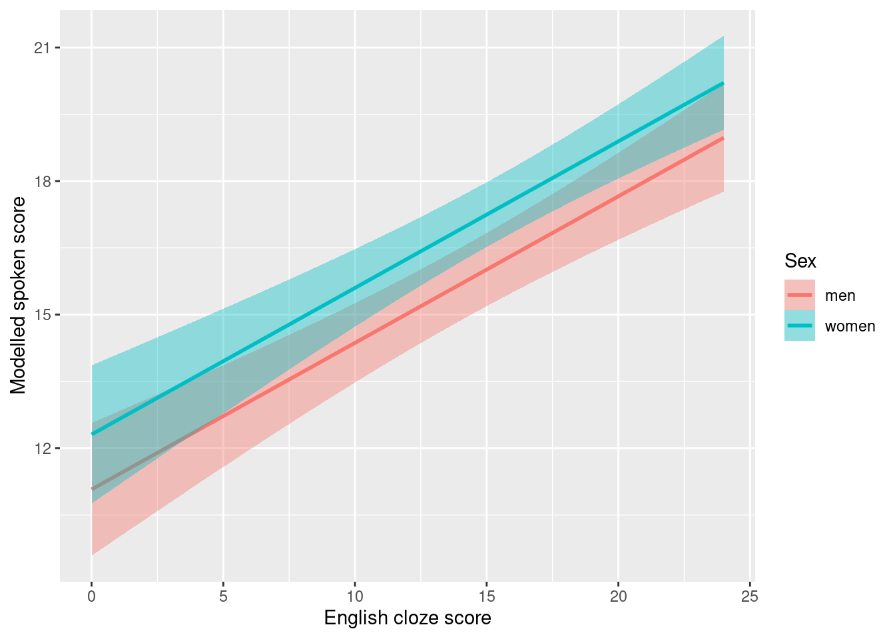
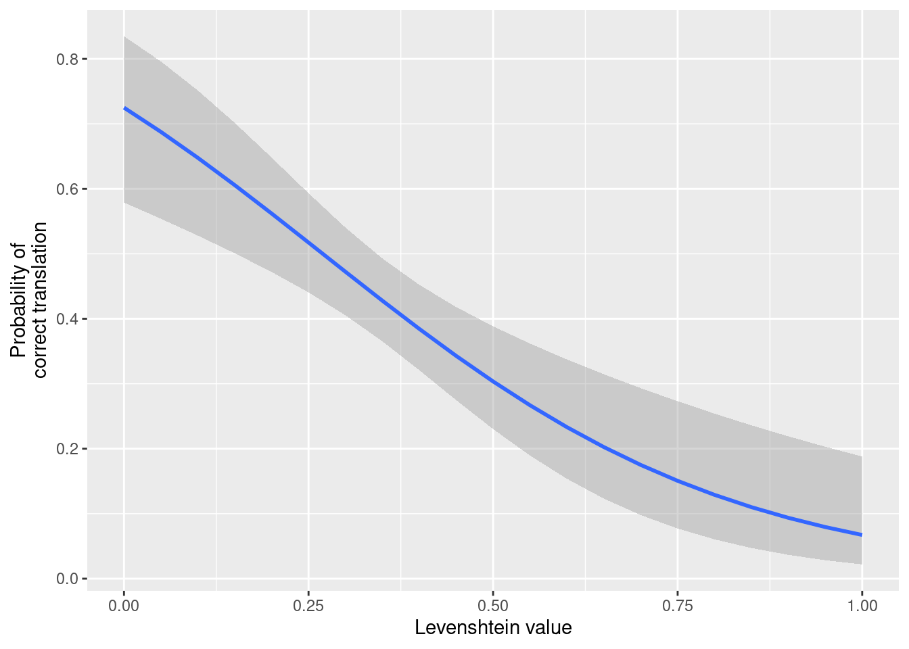
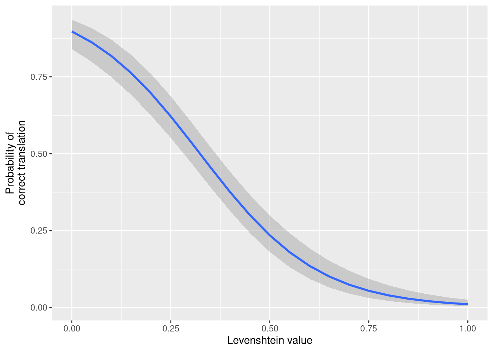

# Load tidyverse package
# (incl. ggplot2 etc.)
library(tidyverse)
# Read in data
ex1 <- read.csv("http://homeweb.unifr.ch/VanhoveJ/Pub/Data/participants_163.csv",
stringsAsFactors = TRUE)
# Retain variables of interest
ex1 <- ex1[, c("Subject", "Spoken", "Sex", "Raven.Right", "English.Cloze")]
# Retain complete cases
ex1 <- ex1[complete.cases(ex1), ]Tutorial: Adding confidence bands to effect displays
R
graphs
logistic regression
mixed-effects models
multiple regression
tutorial
In the previous blog post, I demonstrated how you can draw effect displays to render regression models more intelligible to yourself and to your audience. These effect displays did not contain information about the uncertainty inherent to estimating regression models, however. To that end, this blog post demonstrates how you can add confidence bands to effect displays for multiple regression, logistic regression, and logistic mixed-effects models, and explains how these confidence bands are constructed.
Multiple regression
The Data, Model, and Effect display subsections are identical to those in the previous post, so I left out the accompanying text. In the following subsections, I first show how you can easily add confidence bands to such effect displays and then explain how this method works under the hood.
Data
Model
# Define shorthand for centring at sample mean,
# i.e., subtracting sample mean from each value
c. <- function(x) x - mean(x)
# Centre numeric predictors at sample mean
ex1$c.Raven <- c.(ex1$Raven.Right)
ex1$c.English <- c.(ex1$English.Cloze)
# Sum-code binary predictor (-0.5 vs. 0.5)
ex1$n.Sex <- as.numeric(ex1$Sex) - 1.5
# Fit multiple regression model with n.Sex,
# c.Raven, their interaction, and c.English
mod1 <- lm(Spoken ~ n.Sex * c.Raven + c.English,
data = ex1)Effect display
# Create grid with predictor value combinations
# for which to plot the predictions.
nd1_eng <- expand.grid(
# Both women and men
n.Sex = c(-0.5, 0.5),
# Fix c.Raven at its sample mean (= 0)
c.Raven = 0,
# Unique c.English values in sample
c.English = unique(ex1$c.English)
)
# Use mod1 to 'predict' the Spoken values for the data in nd1_eng,
# and add these 'predictions' to nd1_eng:
nd1_eng$Prediction <- predict(mod1, newdata = nd1_eng)
# De-centre c.English
nd1_eng$English.Cloze <- nd1_eng$c.English + mean(ex1$English.Cloze)
# Relabel n.Sex
nd1_eng$Sex <- ifelse(nd1_eng$n.Sex == -0.5, "women", "men")Add confidence bands using predict()’s built-in method
For regression models fitted using R’s lm() function, confidence bands can easily be constructed using the predict() function we already used to calculate the outcome values for the predictor variables in the previous subsection. In addition to specifying the model and a data frame containing the combinations of predictor variables for which you want to generate predictions, you need to explicitly set the parameter interval to "confidence". If you don’t want to construct 95% confidence bands (the default), you can specify the desired confidence level using the level parameter. Below I set the desired confidence level to 90%, just to demonstrate the parameter’s use.
When used in this fashion, predict() generates a matrix with 3 columns. The first column contains the predictions themselves, i.e., what you’d get if you didn’t specify interval or level, whereas the second and third column contain the lower (lwr) and upper (upr) boundaries of the confidence intervals about the predictions. The code below adds these two latter columns to nd1_eng.
nd1_eng$LoCI <- predict(mod1, newdata = nd1_eng,
interval = "confidence",
level = 0.9)[, 2]
nd1_eng$HiCI <- predict(mod1, newdata = nd1_eng,
interval = "confidence",
level = 0.9)[, 3]We can now draw ribbons showing the 90% confidence band around the lines showing the predictions. Using ggplot, you can use either geom_ribbon() or geom_smooth() to this end, but I find geom_smooth() easier.
ggplot(nd1_eng,
aes(x = English.Cloze,
y = Prediction)) +
# Add a ribbon with the confidence band
geom_smooth(
aes(
# lower and upper bound of the ribbon
ymin = LoCI, ymax = HiCI,
# Different colour for men/women
fill = Sex, colour = Sex
),
stat = "identity") +
xlab("English cloze score") +
ylab("Modelled spoken score")
How does predict() construct confidence bands?
When you want to construct confidence bands for more complex models, such as the logistic mixed-effects model we’ll discuss below, the predict() function is of little help and you’ll need to construct them ‘by hand’. For this, it’s useful to know how predict() works under the hood so that we’ll be able to apply the same principles to more complex models.
The main idea behind this approach is that you can compute the standard errors of the predicted values on the basis of (a) the combinations of predictor variables for which the predictions were computed and (b) the variance–covariance matrix of the estimated parameters of the model you fitted.
As for (a), we need to construct the model matrix for the data frame with the combinations of predictor variables (nd1_eng). The model matrix is just an array of numbers which, when multiplied with the estimated model coefficients, yields the model’s predictions. This matrix is very similar to the data frame with the predictor combinations itself, except that it contains an additional column containing 1’s (representing the intercept in the model) and one for which the n.Sex and c.Raven values have been multiplied (representing the interaction between these two predictors in the model). Since all c.Raven values in nd1_eng are set to 0, this column, too, only contains 0’s.
# Construct model matrix from nd1_eng.
# Make sure the predictors are identical
# to the ones in mod1 and they're in
# the same order!
mm <- model.matrix(~ n.Sex * c.Raven + c.English,
data = nd1_eng)
# Show first 6 rows of this matrix
head(mm) (Intercept) n.Sex c.Raven c.English n.Sex:c.Raven
1 1 -0.5 0 -3.6375 0
2 1 0.5 0 -3.6375 0
3 1 -0.5 0 4.3625 0
4 1 0.5 0 4.3625 0
5 1 -0.5 0 -12.6375 0
6 1 0.5 0 -12.6375 0If you multiply this matrix by the estimated model coefficients, you get the predicted outcomes for these predictor combinations:
head(mm %*% coef(mod1)) [,1]
1 15.92963
2 14.69550
3 18.56257
4 17.32844
5 12.96758
6 11.73345It so happens that the variances of the products of a matrix (such as mm) and a random vector (such as coef(mod1)) can be computed by multiplying the matrix by the variance–covariance matrix of the random vector and then by the transpose of the matrix. This is quite a mouthful, but what it means is that if we get the variance–covariance matrix of the model coefficients, which summarises the uncertainty about the model coefficients and their relationships, we can compute the variances of the predicted outcomes. Luckily, you can easily extract the variance–covariance matrix and calculate this three-way product:
# Get the variance-covariance matrix of mod1
vcov.m <- vcov(mod1)
# Multiply mm by vcov by transpose of mm
vars <- mm %*% vcov.m %*% t(mm)In the present case, this yields a 50-by-50 matrix that has the variances of the 50 predicted outcomes on the main diagonal. The square roots of these variances are the standard errors of the predicted outcomes. Let’s extract these:
sds <- sqrt(diag(vars))These standard errors, in turn, can be used to compute confidence intervals about the predicted outcomes by multiplying them by the appropriate t-value. For a symmetric 90% confidence interval, we need the t-value corresponding to the 95th percentile of the t-distribution with the model’s residual degrees of freedom (90% of the distribution is contained between the 5th and the 95th percentile; the t-value corresponding to the 5th percentile has the same absolute value as the one corresponding to the 95th but is negative, so we take the t-value corresponding to the 95th percentile):
# Multiply this by the appropriate t-value
# to get a confidence interval about the prediction
t.val <- qt(1 - (1 - 0.9)/2, mod1$df.residual)
t.val[1] 1.654744Multiply the standard errors by this t-value (1.65) and add or subtract the product from the predicted outcomes to get the confidence intervals about the predictions:
# Lower CI bound
nd1_eng$LoCI.man <- nd1_eng$Prediction - t.val * sds
# Higher CI bound
nd1_eng$HiCI.man <- nd1_eng$Prediction + t.val * sdsAs you can see, these manually computed boundaries correspond to the boundaries computed using predict():
nd1_eng |>
select(LoCI, HiCI,
LoCI.man, HiCI.man) |>
head() LoCI HiCI LoCI.man HiCI.man
1 15.10475 16.75452 15.10475 16.75452
2 13.83692 15.55409 13.83692 15.55409
3 17.76858 19.35655 17.76858 19.35655
4 16.39751 18.25937 16.39751 18.25937
5 11.57080 14.36436 11.57080 14.36436
6 10.38965 13.07725 10.38965 13.07725By stringing together these confidence intervals, you get a confidence band. Or if you want to be more precise, a pointwise confidence band. What this is means is that the coverage probability of the confidence band is (in this case) 90% for each point on the line—which makes sense, because that’s how the confidence band was constructed: by stringing together 90% confidence intervals.
(There also exists another type of confidence band: simultaneous confidence bands. I’m not going to discuss these here.)
The confidence bands for the Raven-by-sex interaction is left as an exercise to the reader :)
Some miscellaneous points about confidence bands
- Confidence bands are narrowest for the mean predictor value.
- If you fix non-focal predictors at a typical value for the purposes of drawing an effect display, fixing them at their sample mean yields narrower confidence bands than fixing them at any other value.
Logistic model
We can similarly construct confidence bands for logistic regression models. See the previous post for details about the data and the model, which I’ll skip here.
Data, model and effect display
Note that the predicted values are expressed in log-odds, not in probabilities (type = "link").
# Read in data
ex2 <- read.csv("http://homeweb.unifr.ch/VanhoveJ/Pub/Data/ExampleLogisticRegression.csv",
stringsAsFactors = TRUE)
# Retain only the observations for participant `DB3`:
ex2 <- droplevels(subset(ex2, Subject == "DB3"))
# Centre predictors
ex2$c.Lev <- c.(ex2$MinLevGermanic)
ex2$clog.Freq <- c.(ex2$log.FreqGermanic)
# Fit model
mod2 <- glm(Correct ~ c.Lev + clog.Freq,
data = ex2,
family = "binomial")
# Effect display for MinLevGermanic
nd2_lev <- expand.grid(
# A sequence of c.Lev values
# from the sample minimum
# through the sample maximum
# in steps of 0.05
c.Lev = seq(min(ex2$c.Lev),
max(ex2$c.Lev),
by = 0.05),
# Fix clog.Freq at its sample mean
clog.Freq = 0
)
# Fill in predicted values in LOG-ODDS
nd2_lev$Prediction <- predict(mod2, nd2_lev,
type = "link")
# Decentre c.Lev
nd2_lev$Levenshtein <- nd2_lev$c.Lev + mean(ex2$MinLevGermanic)Constructing confidence bands using predict()
For generalised linear models, such as logistic regression models, predict() doesn’t return confidence intervals for predicted values, but it can return standard errors. We can use these to construct the confidence bands ourselves.
# Add standard errors to nd2_lev
nd2_lev$SE <- predict(mod2, nd2_lev,
type = "link",
se.fit = TRUE)$se.fitThese standard errors are expressed in log-odds. To construct confidence intervals, we need to find the appropriate multiplier. For ordinary least-squares regression (cf. above), there is an exact solution to this problem, namely by referring to a t-distribution with the appropriate degrees of freedom. For logistic regression, we have to make do with an approximation based on the normal distribution.
# Find multiplier for 90% CI
z.val <- qnorm(1 - (1 - 0.90)/2)
z.val[1] 1.644854Now multiply the standard errors by this multiplier and add/subtract them from the predicted outcomes:
nd2_lev$LoCI <- nd2_lev$Prediction - z.val * nd2_lev$SE
nd2_lev$HiCI <- nd2_lev$Prediction + z.val * nd2_lev$SEThis yields confidence intervals in log-odds. Probabilities are easier to interpret, though, so we run these through the logistic function to transform the log-odds to probabilities:
nd2_lev$prob.Prediction <- plogis(nd2_lev$Prediction)
nd2_lev$prob.LoCI <- plogis(nd2_lev$LoCI)
nd2_lev$prob.HiCI <- plogis(nd2_lev$HiCI)Stringing the confidence intervals together, we get the 90% pointwise confidence band:
ggplot(nd2_lev,
aes(x = Levenshtein,
y = prob.Prediction)) +
geom_smooth(aes(ymin = prob.LoCI,
ymax = prob.HiCI),
stat = "identity") +
xlab("Levenshtein value") +
ylab("Probability of\ncorrect translation")
Mixed-effects logistic regression
Once you get the hang of it, constructing confidence bands for the fixed effects in a mixed-effects model isn’t really that much more difficult than for the other models.
For details about the data, the model specification and the basic effect display, please refer to the previous blog post.
Data, model and effect display
Note that this time, the predictions are generated in log-odds, not in probabilities (type = "link").
# Read in data
ex3 <- read.csv("http://homeweb.unifr.ch/VanhoveJ/Pub/Data/ExampleLogisticRegression.csv",
stringsAsFactors = TRUE)
# Centre numeric variables
ex3$c.Lev <- c.(ex3$MinLevGermanic)
ex3$clog.Freq <- c.(ex3$log.FreqGermanic)
ex3$c.Eng <- c.(ex3$EngReading)
# Express Sex as numeric variable (+/- 0.5)
# where -0.5 = m(an) and 0.5 = w(oman)
ex3$n.Sex <- as.numeric(ex3$Sex) - 1.5
# Fit model
library(lme4)Loading required package: Matrix
Attaching package: 'Matrix'The following objects are masked from 'package:tidyr':
expand, pack, unpackmod3 <- glmer(Correct ~ c.Lev + clog.Freq +
c.Eng + n.Sex +
(1 + c.Lev | Subject) +
(1 + c.Eng | Stimulus),
data = ex3,
family = "binomial")
# Effect display for Levenshtein
nd3_lev <- expand.grid(
c.Lev = seq(min(ex3$c.Lev),
max(ex3$c.Lev),
by = 0.05),
clog.Freq = 0,
c.Eng = 0,
n.Sex = 0
)
# Add prediction IN LOG-ODDS
nd3_lev$Prediction <- predict(mod3, nd3_lev,
type = "link",
re.form = NA)
# Decentre c.Lev
nd3_lev$Levenshtein <- nd3_lev$c.Lev + mean(ex3$MinLevGermanic)Construct confidence band manually
predict() doesn’t generate confidence intervals or standard errors for mixed-effects models, so we’ll have to compute them manually. The method is the same as for the ordinary least-squares model above; see http://glmm.wikidot.com/faq#predconf for a summary.
First, construct the model matrix for the combinations of predictor variables we generated the outcomes for.
# Model matrix of nd3_lev
# Make sure the predictor variables
# occur in the same order as in the model!
mm <- model.matrix(~ c.Lev + clog.Freq + c.Eng + n.Sex,
nd3_lev)Then extract the variance–covariance matrix of the model and use it to compute the standard errors for the predictions (in log-odds):
# Variance--covariance of mod3
vcov.m <- vcov(mod3)
# Compute variances
vars <- mm %*% vcov.m %*% t(mm)
# Extract square roots of main diagonal
# (= standard errors)
sds <- sqrt(diag(vars))Now find the multiplier appropriate for 90% confidence intervals and carry out the same calculation as the previous two times:
z.val <- qnorm(1 - (1 - 0.9)/2)
nd3_lev$LoCI <- nd3_lev$Prediction - z.val * sds
nd3_lev$HiCI <- nd3_lev$Prediction + z.val * sdsRun the predicted values and their confidence bands through the logistic function to transform them to probabilities:
nd3_lev$prob.Prediction <- plogis(nd3_lev$Prediction)
nd3_lev$prob.LoCI <- plogis(nd3_lev$LoCI)
nd3_lev$prob.HiCI <- plogis(nd3_lev$HiCI)And plot:
ggplot(nd3_lev,
aes(x = Levenshtein,
y = prob.Prediction)) +
geom_smooth(aes(ymin = prob.LoCI,
ymax = prob.HiCI),
stat = "identity") +
xlab("Levenshtein value") +
ylab("Probability of\ncorrect translation")
Note that this confidence band is based solely on the fixed-effects. As such, it should be taken to reflect the uncertainty about the average participant’s regression curve; the regression curves of individual participants can differ wildly from this average.
This post hardly makes for captivating reading, but I hope it helps some of you who want to visualise the uncertainty in their regression models.
Software versions
devtools::session_info()─ Session info ───────────────────────────────────────────────────────────────
setting value
version R version 4.3.1 (2023-06-16)
os Ubuntu 22.04.2 LTS
system x86_64, linux-gnu
ui X11
language en_US
collate en_US.UTF-8
ctype en_US.UTF-8
tz Europe/Zurich
date 2023-08-07
pandoc 3.1.1 @ /usr/lib/rstudio/resources/app/bin/quarto/bin/tools/ (via rmarkdown)
─ Packages ───────────────────────────────────────────────────────────────────
package * version date (UTC) lib source
boot 1.3-28 2021-05-03 [4] CRAN (R 4.2.0)
cachem 1.0.6 2021-08-19 [2] CRAN (R 4.2.0)
callr 3.7.3 2022-11-02 [1] CRAN (R 4.3.1)
cli 3.6.1 2023-03-23 [1] CRAN (R 4.3.0)
codetools 0.2-19 2023-02-01 [4] CRAN (R 4.2.2)
colorspace 2.1-0 2023-01-23 [1] CRAN (R 4.3.0)
crayon 1.5.2 2022-09-29 [1] CRAN (R 4.3.1)
devtools 2.4.5 2022-10-11 [1] CRAN (R 4.3.1)
digest 0.6.29 2021-12-01 [2] CRAN (R 4.2.0)
dplyr * 1.1.2 2023-04-20 [1] CRAN (R 4.3.0)
ellipsis 0.3.2 2021-04-29 [2] CRAN (R 4.2.0)
evaluate 0.15 2022-02-18 [2] CRAN (R 4.2.0)
fansi 1.0.4 2023-01-22 [1] CRAN (R 4.3.1)
farver 2.1.1 2022-07-06 [1] CRAN (R 4.3.0)
fastmap 1.1.0 2021-01-25 [2] CRAN (R 4.2.0)
forcats * 1.0.0 2023-01-29 [1] CRAN (R 4.3.0)
fs 1.5.2 2021-12-08 [2] CRAN (R 4.2.0)
generics 0.1.3 2022-07-05 [1] CRAN (R 4.3.0)
ggplot2 * 3.4.2 2023-04-03 [1] CRAN (R 4.3.0)
glue 1.6.2 2022-02-24 [2] CRAN (R 4.2.0)
gtable 0.3.3 2023-03-21 [1] CRAN (R 4.3.0)
hms 1.1.3 2023-03-21 [1] CRAN (R 4.3.0)
htmltools 0.5.5 2023-03-23 [1] CRAN (R 4.3.0)
htmlwidgets 1.6.2 2023-03-17 [1] CRAN (R 4.3.1)
httpuv 1.6.11 2023-05-11 [1] CRAN (R 4.3.1)
jsonlite 1.8.7 2023-06-29 [1] CRAN (R 4.3.1)
knitr 1.39 2022-04-26 [2] CRAN (R 4.2.0)
labeling 0.4.2 2020-10-20 [1] CRAN (R 4.3.0)
later 1.3.1 2023-05-02 [1] CRAN (R 4.3.1)
lattice 0.21-8 2023-04-05 [4] CRAN (R 4.3.0)
lifecycle 1.0.3 2022-10-07 [1] CRAN (R 4.3.0)
lme4 * 1.1-34 2023-07-04 [1] CRAN (R 4.3.1)
lubridate * 1.9.2 2023-02-10 [1] CRAN (R 4.3.0)
magrittr 2.0.3 2022-03-30 [1] CRAN (R 4.3.0)
MASS 7.3-60 2023-05-04 [4] CRAN (R 4.3.1)
Matrix * 1.6-0 2023-07-08 [4] CRAN (R 4.3.1)
memoise 2.0.1 2021-11-26 [2] CRAN (R 4.2.0)
mime 0.10 2021-02-13 [2] CRAN (R 4.0.2)
miniUI 0.1.1.1 2018-05-18 [1] CRAN (R 4.3.1)
minqa 1.2.5 2022-10-19 [1] CRAN (R 4.3.1)
munsell 0.5.0 2018-06-12 [1] CRAN (R 4.3.0)
nlme 3.1-162 2023-01-31 [4] CRAN (R 4.2.2)
nloptr 2.0.3 2022-05-26 [1] CRAN (R 4.3.1)
pillar 1.9.0 2023-03-22 [1] CRAN (R 4.3.0)
pkgbuild 1.4.2 2023-06-26 [1] CRAN (R 4.3.1)
pkgconfig 2.0.3 2019-09-22 [2] CRAN (R 4.2.0)
pkgload 1.3.2.1 2023-07-08 [1] CRAN (R 4.3.1)
prettyunits 1.1.1 2020-01-24 [2] CRAN (R 4.2.0)
processx 3.8.2 2023-06-30 [1] CRAN (R 4.3.1)
profvis 0.3.8 2023-05-02 [1] CRAN (R 4.3.1)
promises 1.2.0.1 2021-02-11 [1] CRAN (R 4.3.1)
ps 1.7.5 2023-04-18 [1] CRAN (R 4.3.1)
purrr * 1.0.1 2023-01-10 [1] CRAN (R 4.3.0)
R6 2.5.1 2021-08-19 [2] CRAN (R 4.2.0)
Rcpp 1.0.11 2023-07-06 [1] CRAN (R 4.3.1)
readr * 2.1.4 2023-02-10 [1] CRAN (R 4.3.0)
remotes 2.4.2 2021-11-30 [2] CRAN (R 4.2.0)
rlang 1.1.1 2023-04-28 [1] CRAN (R 4.3.0)
rmarkdown 2.21 2023-03-26 [1] CRAN (R 4.3.0)
rstudioapi 0.14 2022-08-22 [1] CRAN (R 4.3.0)
scales 1.2.1 2022-08-20 [1] CRAN (R 4.3.0)
sessioninfo 1.2.2 2021-12-06 [2] CRAN (R 4.2.0)
shiny 1.7.4.1 2023-07-06 [1] CRAN (R 4.3.1)
stringi 1.7.12 2023-01-11 [1] CRAN (R 4.3.1)
stringr * 1.5.0 2022-12-02 [1] CRAN (R 4.3.0)
tibble * 3.2.1 2023-03-20 [1] CRAN (R 4.3.0)
tidyr * 1.3.0 2023-01-24 [1] CRAN (R 4.3.0)
tidyselect 1.2.0 2022-10-10 [1] CRAN (R 4.3.0)
tidyverse * 2.0.0 2023-02-22 [1] CRAN (R 4.3.1)
timechange 0.2.0 2023-01-11 [1] CRAN (R 4.3.0)
tzdb 0.4.0 2023-05-12 [1] CRAN (R 4.3.0)
urlchecker 1.0.1 2021-11-30 [1] CRAN (R 4.3.1)
usethis 2.2.2 2023-07-06 [1] CRAN (R 4.3.1)
utf8 1.2.3 2023-01-31 [1] CRAN (R 4.3.1)
vctrs 0.6.3 2023-06-14 [1] CRAN (R 4.3.0)
withr 2.5.0 2022-03-03 [2] CRAN (R 4.2.0)
xfun 0.39 2023-04-20 [1] CRAN (R 4.3.0)
xtable 1.8-4 2019-04-21 [1] CRAN (R 4.3.1)
yaml 2.3.5 2022-02-21 [2] CRAN (R 4.2.0)
[1] /home/jan/R/x86_64-pc-linux-gnu-library/4.3
[2] /usr/local/lib/R/site-library
[3] /usr/lib/R/site-library
[4] /usr/lib/R/library
──────────────────────────────────────────────────────────────────────────────